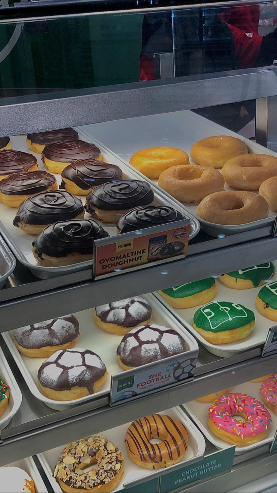
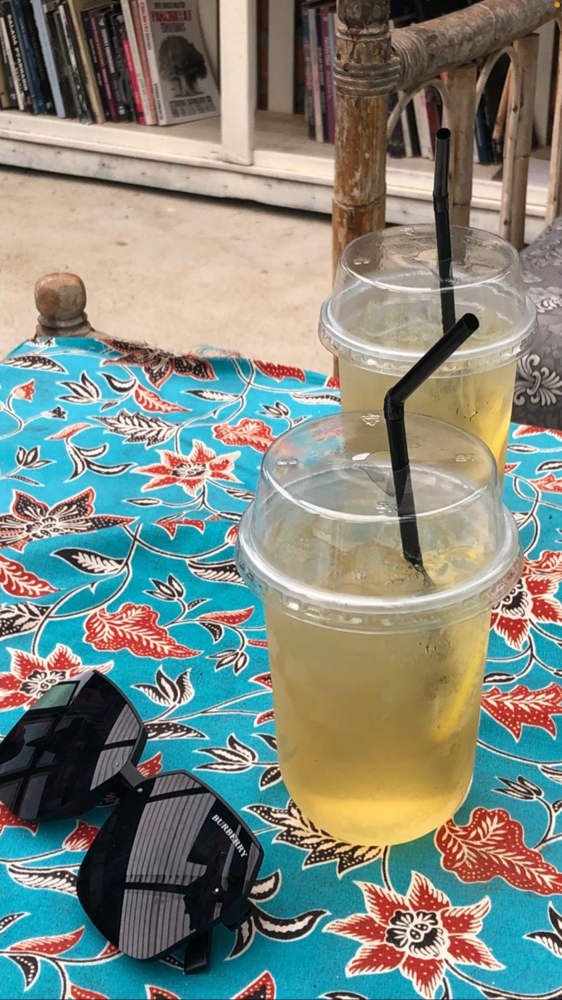
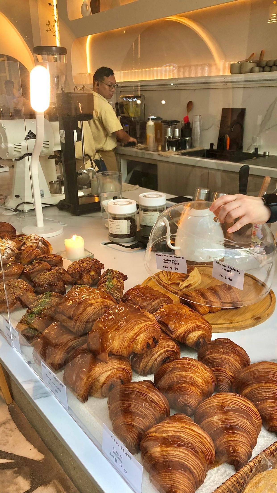
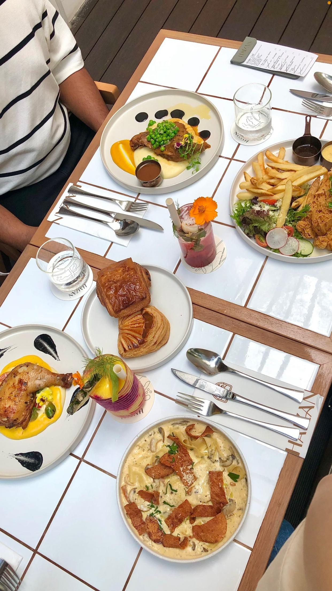
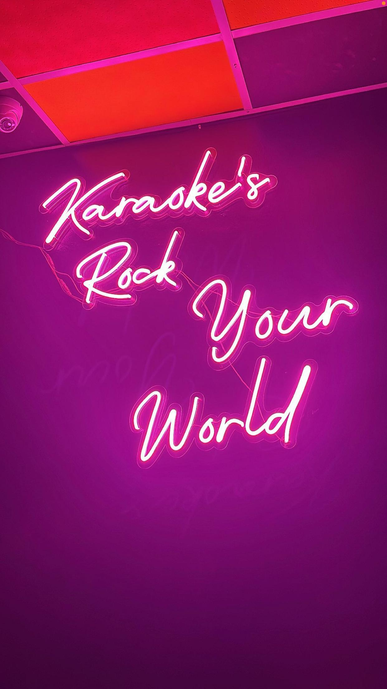

𝜗𝜚🍯💫 I also love capturing pictures. Here are some of my collections. 💫🍯 𝜗𝜚





A hobby can have a significant positive impact on a person by offering a fulfilling escape from daily stress.
It provides an opportunity for personal growth, boosts creativity, and helps develop new skills.
Engaging in hobbies also improves mental well-being, builds confidence, and promotes relaxation.
Whether physical, creative, or intellectual, hobbies contribute to a balanced life, enhancing both emotional and physical health.
"Choose a hobby that nourishes your soul, challenges your mind, and brings joy to your life."-int.natasya